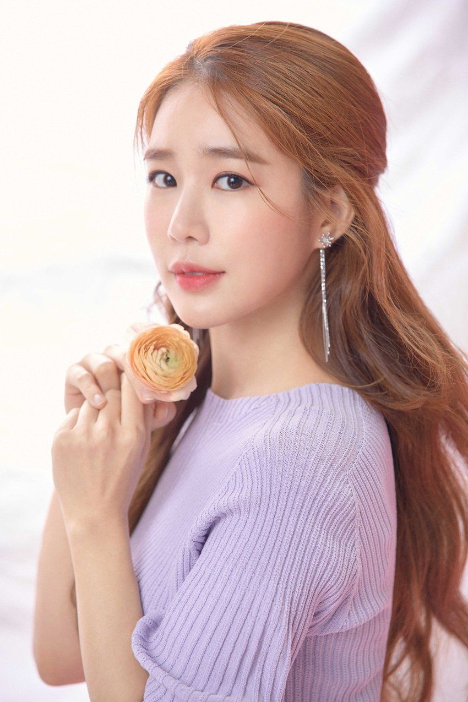

작고 예쁜 동안 얼굴과 미성에 애교넘치는 목소리와 아름다운 몸매까지 가진 배우다. 연기자 데뷔 전에 케이블 프로그램에서 주인공의 친구로 출연하며 처음 전파를 탔다. 2007년에 방송된 <나는 펫 시즌 1>의 주인공이었던 '청미'[4]라는 사람의 친구로 등장했다.
원래 가수 지망생이었지만, 2009년에 출연한 MBC의 시트콤 지붕 뚫고 하이킥에 출연하여 본격적으로 연기자 활동을 시작했다. 2010년에는 SBS 예능 프로그램인 영웅호걸과 SBS 드라마 시크릿 가든에 출연하였고, 2011년 5월 4일부터 6월 23일까지 방영한 MBC 수목드라마 최고의 사랑에 출연했다. 드라마에서 주로 털털한 역 아니면 허당끼가 있는 역할을 많이 맡았다. 2010년 시크릿 가든의 임아영 역을 통해서 좋은 인상을 남겼다.
2012년 인현왕후의 남자에서 주연을 맡아 유인나의 대표작이라 해도 좋을 정도로 호평받았다. 인현왕후의 남자는 중화권 등지의 한류 팬들로부터도 인기가 있어서 중국 후난위성TV에서 유인나까지 직접 섭외하며 리메이크판을 찍을 정도. 그러나 사드 배치에 대해 중국이 보복 의도로 한류 규제를 강화하면서, 제작이 중단되었다.(또 다른 대표작인 볼륨을 높여요를 하차하게 된 이유였는데..)
2014년에는 드라마 '마이 시크릿 호텔'에서 7년 전 이혼한 전남편의 결혼식을 도와주는 '예식지배인' 남상효 역으로 출연했다. 예쁨을 담당한다. 2016년 드라마 도깨비에 써니 역으로 출연했다. 김은숙 작가의 작품에 출연한 것은 이번이 2번째. 자칫 오그라들수도 있는 써니라는 캐릭터를 잘 살려내 호평을 받았다. 걸크러쉬라며 여성 시청자들 사이에서 인기를 끄는 중. 2019년 드라마 진심이 닿다에서 도깨비에서 커플 연기로 호흡을 맞췄던 이동욱과 2년만에 재회하여, 성공적인 드라마 복귀를 위해서 올웨이즈 로펌에 위장 취업한 여배우 오윤서(오진심)역으로 출연했다. 이동욱과의 안정된 연기합으로 사랑스러운 모습을 보여주었다.
| 아이유 | 48.3 |
| 유인나 | 36.9 |
| 유애나 | 36.2 |